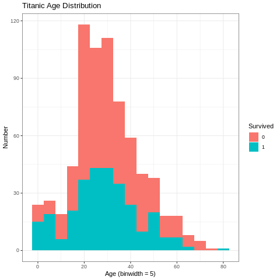

!pip uninstall rpy2 -y
!pip install rpy2==3.5.1
%load_ext rpy2.ipython
from google.colab import drive
drive.mount('/content/drive')Mounted at /content/drive%%R
#assign(".lib.loc", "drive/MyDrive/R/R_Packages/", envir = environment(.libPaths))
assign(".lib.loc", c("drive/MyDrive/R/R_Packages/","/usr/lib/R/site-library","/usr/lib/R/library"), envir = environment(.libPaths))
#assign(".lib.loc", c("drive/MyDrive/R/R_Packages/","/usr/local/lib/R/site-library","/usr/lib/R/site-library","/usr/lib/R/library"), envir = environment(.libPaths))
.libPaths()[1] "drive/MyDrive/R/R_Packages/" "/usr/lib/R/site-library"
[3] "/usr/lib/R/library" %%R
library(ggplot2)
library(tidyverse)
titanic <- read.csv('https://raw.githubusercontent.com/datasciencedojo/datasets/master/titanic.csv')
head(titanic) PassengerId Survived Pclass
1 1 0 3
2 2 1 1
3 3 1 3
4 4 1 1
5 5 0 3
6 6 0 3
Name Sex Age SibSp Parch
1 Braund, Mr. Owen Harris male 22 1 0
2 Cumings, Mrs. John Bradley (Florence Briggs Thayer) female 38 1 0
3 Heikkinen, Miss. Laina female 26 0 0
4 Futrelle, Mrs. Jacques Heath (Lily May Peel) female 35 1 0
5 Allen, Mr. William Henry male 35 0 0
6 Moran, Mr. James male NA 0 0
Ticket Fare Cabin Embarked
1 A/5 21171 7.2500 S
2 PC 17599 71.2833 C85 C
3 STON/O2. 3101282 7.9250 S
4 113803 53.1000 C123 S
5 373450 8.0500 S
6 330877 8.4583 Q%%R
#setup factors
titanic$Pclass <- as.factor(titanic$Pclass)
titanic$Survived <- as.factor(titanic$Survived)
titanic$Sex <- as.factor(titanic$Sex)
titanic$Embarked <- as.factor(titanic$Embarked)%%R
ggplot(titanic, aes(x = Survived))+
geom_bar()%%R
ggplot(titanic, aes(x = Survived))+
geom_bar()
prop.table(table(titanic$Survived))
0 1
0.6161616 0.3838384 %%R
ggplot(titanic, aes(x = Sex, fill=Survived))+
geom_bar()+
theme_bw()+
labs(y="Number",
title="Titanic Survival Rate",
)
%%R
ggplot(titanic, aes(x = Pclass, fill=Survived))+
geom_bar()+
theme_bw()+
labs(y="Number",
title="Titanic Survival Rate",
)%%R
ggplot(titanic, aes(x = Sex, fill=Survived))+
geom_bar()+
theme_bw()+
facet_wrap(~ Pclass)+
labs(y="Number",
title="Titanic Survival Rate",
)%%R
ggplot(titanic, aes(x = Age))+
geom_histogram(binwidth=5)+
theme_bw()+
labs(y="Number",
x = "Age (binwidth = 5)",
title="Titanic Age Distribution",
)%%R
ggplot(titanic, aes(x = Age, fill=Survived))+
geom_histogram(binwidth=5)+
theme_bw()+
labs(y="Number",
x = "Age (binwidth = 5)",
title="Titanic Age Distribution",
)%%R
ggplot(titanic, aes(x = Survived, y=Age))+
geom_boxplot()+
theme_bw()+
labs(y="Age",
x = "Survived",
title="Titanic Age Distribution",
)
%%R
ggplot(titanic, aes(x = Age, fill=Survived))+
geom_density(alpha=.5)+
theme_bw()+
facet_wrap(Sex~Pclass)+
labs(y="Number",
x = "Age",
title="Titanic Survival Rate by Age, Pclass, Sex"
)%%R
ggplot(titanic, aes(x = Age, fill=Survived))+
geom_histogram(alpha=.5,binwidth=5)+
theme_bw()+
facet_wrap(Sex~Pclass)+
labs(y="Number",
x = "Age",
title="Titanic Survival Rate by Age, Pclass, Sex"
)%%R
#install.packages("rgee", lib='drive/MyDrive/R/R_Packages/')
library(rgee)
library(sf)
library(raster)